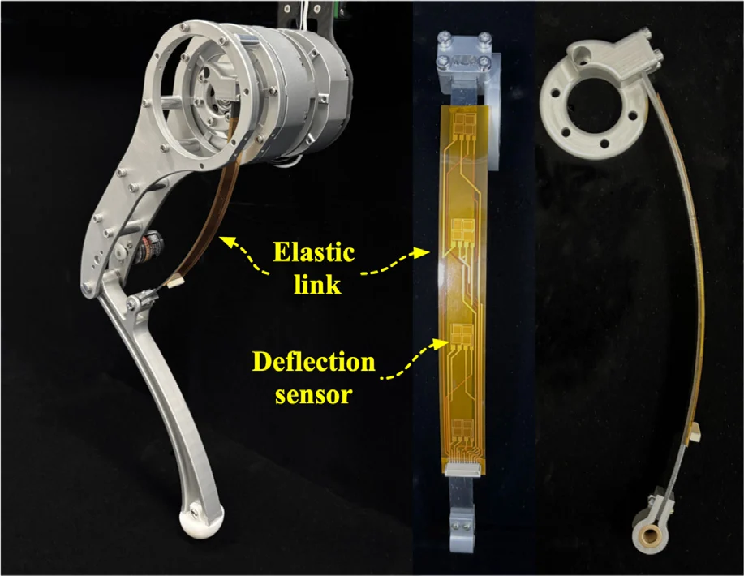
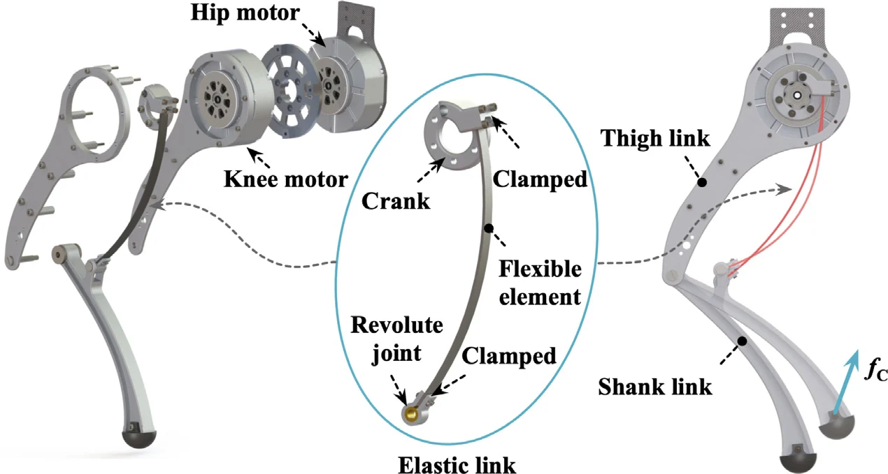
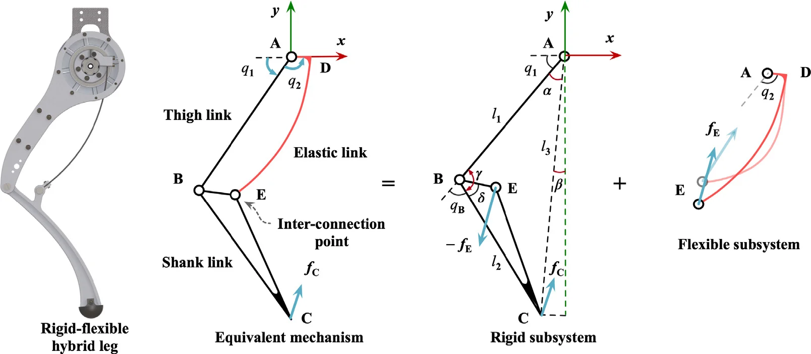
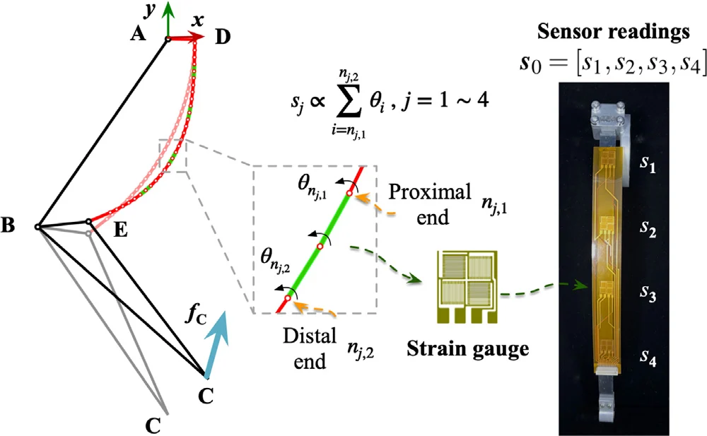
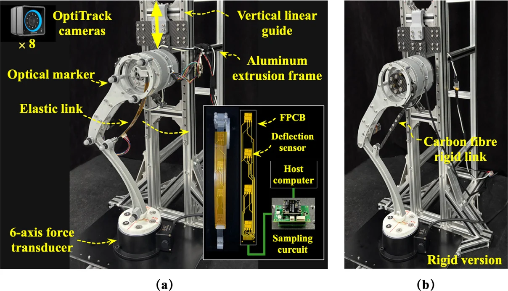
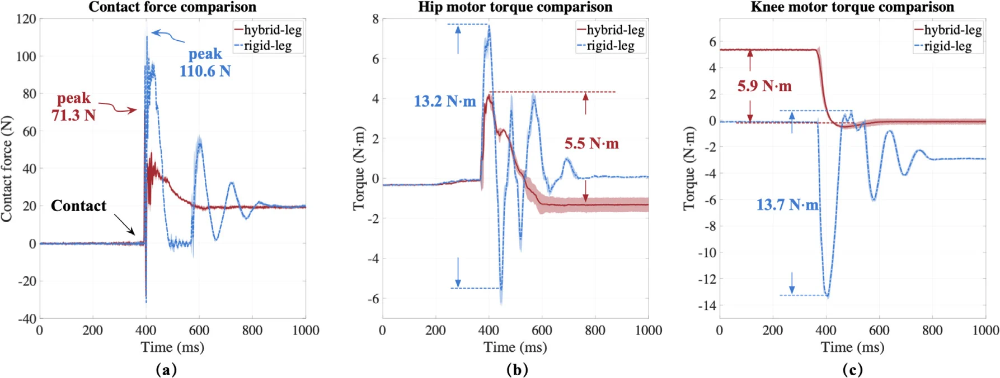
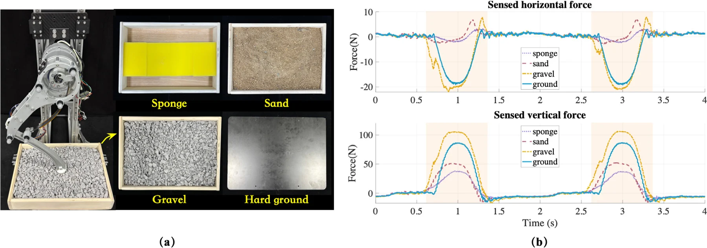
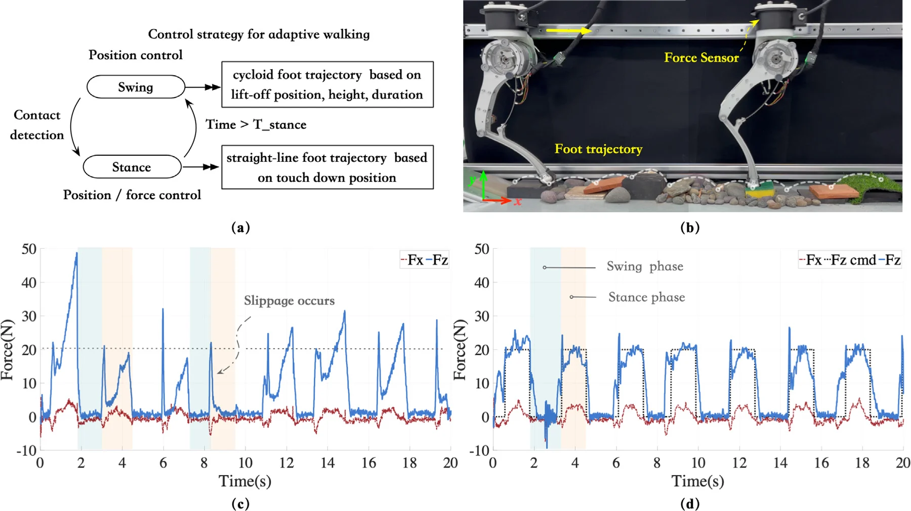

The idea
One spring-steel arc that drives the knee,
cushions landings and feels the ground.
In this two-motor robotic leg, the knee motor turns the knee through an arc-shaped link of spring steel. The link transmits the motion like a rigid link, gives way like a leaf spring, and bends by an amount that reveals the force at the foot.
Four strain gauges along the link measure its bending. A model of the leg turns these readings and the hip motor's torque into the foot's contact force and position, with no sensor in the foot. Against a rigid version of the same leg, the peak landing impact fell by 35%, and the sensed force let the leg detect contact, follow its contact force while jumping, tell terrains apart and walk on uneven terrain under force control.
01 / Why compliance
Why a spring
in the leg?
What do tendons give animals that rigid robot legs lack?
Legged robots built from rigid links and stiff actuators can be controlled precisely and quickly, but they use energy poorly and are vulnerable to impact loads. Animals move with little control effort and energy, thanks to the compliance of their muscles and tendons. Robot legs borrow this with springs in series or in parallel with their actuators, usually tension or torsion springs, and sometimes straight leaf springs.
A leg also needs to feel its contact with the ground. A force sensor in the foot measures the contact directly but makes the foot bulkier, and estimating the force from motor torques was developed for rigid legs. In a leg with a spring, the spring's deflection gives the actuator's force, yet force sensing for the whole leg, at the foot, has rarely been shown.
This leg makes a whole link the spring: an arc of spring steel that drives the knee, absorbs impacts even with both motors locked, and senses the force at the foot.

02 / Mechanism
One link,
three functions.
Can one link drive the knee, absorb impact and sense contact?
The leg has two degrees of freedom, hip and knee flexion, driven by two motors mounted coaxially at the hip to reduce the leg's inertia. The hip motor turns the thigh directly. The knee motor turns a crank, and the crank drives the shank through the elastic link: a spring-steel arc clamped to the crank at one end and joined to the shank by a revolute joint at the other. Thigh, shank, crank and arc form a four-bar linkage with one elastic link.
Because the link bends, the leg keeps an extra degree of freedom that absorbs impacts even with both motors locked. The cost is the link's nonlinear, large deflection, which makes the leg harder to model and control. The authors model the arc as a chain of short segments joined by elastic joints and couple it to the rigid two-link leg. Solving the model gives the foot position for given motor angles and loads, or the motor angles for a target foot position and load.


03 / Contact sensing
Feeling force
through bending.
How does the leg know how hard it pushes?
A flexible printed circuit, 150 mm long, runs along one side of the link and carries four etched strain gauges, 40 mm apart. Each gauge is a Wheatstone bridge covering 8 × 9 mm, and its reading follows the bending of the part of the link it covers, with a resolution of 0.1°. A small sampling board, 28 × 36 × 12 mm³, reads the gauges at over 1 kHz.
The model alone cannot fix the force at the foot: the balance at the knee involves only the force component perpendicular to the shank. The hip motor's torque adds a second equation, and the bending readings add the rest, so the model has more equations than unknowns and is solved by least squares. In theory one gauge would be enough; four make the estimate more robust. The solution gives both the contact force and the position of the foot.


Sensed force also detects contact. The leg flexed and extended repeatedly and pulled back as soon as the sensed force exceeded a threshold of 10 N, whether it met an aluminum profile, a hard rubber pad or a soft sponge pad.
To check the force itself, the hip was fixed and the foot pressed into a force transducer at five positions from −50 to 50 mm, in seven steps of 1 mm, five times each. The RMS errors were 0.5–1.1 N and the largest errors 1.0–2.5 N. Vertical forces up to 35 N were sensed within 5%; the horizontal forces were only about 3 N, so their relative errors were larger, although the absolute errors were close. With the hip free, the leg also sensed loads of 1 to 4 kg hung on it, slightly low, mainly because of friction in the guide, and from the sensed foot position it told the height of each of six 8 mm steps.
04 / Free-fall tests
Softer
landings.
How much impact does the elastic link absorb?
For comparison, the authors built a rigid version of the same size, with a carbon-fiber link in place of the spring-steel arc. Each leg was lifted 100 mm on the rig's vertical guide and dropped onto a force transducer, five times.
The rigid leg's contact force peaked at 110 N, oscillated strongly and took about 400 ms to settle. The hybrid leg peaked at 71 N, 35% lower, and settled in about 200 ms. The motors felt the difference too. Taking the range of motor torque during contact as the impact on a motor, the hip motor's impact fell from 13.2 to 5.5 N·m (58.3%) and the knee motor's from 13.7 to 5.9 N·m (56.9%).


05 / Dynamic sensing
Sensing
in dynamic motion.
Does sensing keep up with jumping, and what does it say about the ground?
On a vertical guide, the leg jumped again and again under a simple state machine with three phases: pushing off, flight and landing. The phases switched on contact detection, a sensed vertical force above 10 N, and on the hip's height above the foot falling below 0.27 m. Through push-off and landing, the sensed force followed the measured force in trend and magnitude. In flight, when the measured force was zero, the sensed force fluctuated around zero as the elastic link vibrated.
The sensed force also reveals the ground. The leg stepped repeatedly onto gravel, sand, a sponge and hard ground. Harder ground gave steeper, higher force curves, and on gravel the curve jumped abruptly as the stones slid and bounced. From each stride the authors took four features of the force curve: its peak, its mean, its width at half the peak and its area. A support vector machine trained on half of the 40 strides per terrain identified the terrain of the other half from a single stride more than 90% of the time.

| Identified as | ||||
|---|---|---|---|---|
| True terrain | Gravel | Sand | Sponge | Ground |
| Gravel | 93.8% | 0.0% | 0.0% | 6.2% |
| Sand | 4.4% | 91.2% | 4.4% | 0.0% |
| Sponge | 0.0% | 8.7% | 91.3% | 0.0% |
| Ground | 9.5% | 0.0% | 0.0% | 90.5% |
06 / Force control
Walking
by feel.
Can sensed force close the loop?
With its hip fixed, the leg commanded its own ground forces: vertical steps from 12 to 28 N and horizontal steps from −8 to 8 N, 4 N at a time, and sine waves over the same ranges. A force transducer under the foot showed both forces following their commands, each independently of the other.
Then the leg walked along a horizontal guide over stones, bricks, pebbles, hard rubber pads of different thicknesses and sponges. In the swing phase the foot follows a cycloid; in stance it moves in a straight line, and with force control the vertical force is held at 20 N, close to the leg's weight. Without force control, the force rose in sharp peaks of up to 50 N and the foot slipped in 7 of 8 trials. With it, the force stayed near 20 N through each stance, and slipping fell to 0 of 8 trials.

Beyond the paper
From one leg
to four.
A commercial quadruped jumps forward with its original rigid legs, and with a thin arc-shaped link on each leg. Each clip shows the jump in real time, then again in 4× slow motion.
Questions & answers
Common questions.
How is this different from a series elastic actuator?
A series elastic actuator puts a spring between a motor and its load, and the spring's deflection gives the actuator's force. Here the spring is a whole link of the leg: it transmits the knee's motion, absorbs impacts even with both motors locked, and its bending, together with the hip motor's torque, gives the force at the foot rather than at one joint.
How accurate is the force sensing?
In static tests at five foot positions, the RMS errors were 0.5–1.1 N and the largest errors 1.0–2.5 N. Vertical forces up to 35 N were sensed within 5%. The horizontal forces were only about 3 N, so their relative errors were larger, although their absolute errors were close to the vertical ones.
Why four strain gauges?
With the hip motor's torque, one gauge would in theory be enough to determine the force. Four gauges make the estimate more robust. The model then has more equations than unknowns and is solved by least squares, each solution starting from the one before.
Does the elastic link vibrate?
Yes. In flight during continuous jumping, the measured force was zero while the sensed force fluctuated around zero, because the link vibrated, and some oscillation also appeared late in the landing phase. Through push-off and landing, the sensed force still followed the measured force.
What comes next?
The authors plan to use the leg in quadruped and biped robots. They also suggest normalizing or weighting the least-squares equations, which mix quantities in different units.
Paper & authors
Compliance and sensing
in one link.
Development and validation of a rigid-flexible hybrid robotic leg with structural compliance and intrinsic contact sensing capability
Shujie Tang, Siyue Yao, Xingyue Zhu, Tao Yu, Hao Wang, Haoyong Yu, and Genliang Chen.
Mechanism and Machine Theory, vol. 218, article 106271, 2025.
Citation / BibTeX
@article{tang2025hybridleg,
title = {Development and validation of a rigid-flexible hybrid robotic leg with structural compliance and intrinsic contact sensing capability},
author = {Tang, Shujie and Yao, Siyue and Zhu, Xingyue and Yu, Tao and Wang, Hao and Yu, Haoyong and Chen, Genliang},
journal = {Mechanism and Machine Theory},
volume = {218},
pages = {106271},
year = {2025},
publisher = {Elsevier BV},
doi = {10.1016/j.mechmachtheory.2025.106271}
}Full affiliations
- Shanghai Key Laboratory of Intelligent Robotics, Meta Robotics Institute, Shanghai Jiao Tong University, Shanghai 200240, China
- State Key Laboratory of Mechanical Systems and Vibration, Shanghai Jiao Tong University, Shanghai 200240, China
- Shanghai Key Laboratory of Digital Manufacturing for Thin-Walled Structures, Shanghai Jiao Tong University, Shanghai 200240, China
- Department of Biomedical Engineering, National University of Singapore, Singapore 117583, Singapore
* Corresponding author: Genliang Chen
Supplementary video
Watch the experiments.
The paper's supplementary video: contact detection, force sensing while jumping, jumping over obstacles, and walking on uneven terrain without and with force control.